收录于合集

作品简介
【作者】 Andrew Healy，洛约拉马利蒙特大学（Loyola Marymount University）经济学系副教授，主要研究方向为政治经济学、应用计量经济学。Katrina Kosec，国际食物政策研究所 (International Food Policy Research Institute, IFPRI)高级研究员，主要研究方向为公共治理、公共投资和环境的交叉。Cecilia Hyunjung Mo，现为加州大学伯克利分校政治学系和公共政策系助理教授，主要研究兴趣为行为政治经济学、比较政治行为、发展政治经济学和社会政策等，她的研究曾获得美国政治学会、政治行为(Political Behavior)期刊、国际政治心理学学会的多项奖励。
【编译】 兰星辰（国政学人编译员，北京大学）
【审读】 丁伟航
【排版】 王国伟
【来源】 HEALY, A., KOSEC, K., & MO, C. (2017). Economic Development,
Mobility, and Political Discontent: An Experimental Test of Tocqueville’s
Thesis in Pakistan. American Political Science Review,111 (3),605-621.
doi:10.1017/S000305541700017X
期刊介绍
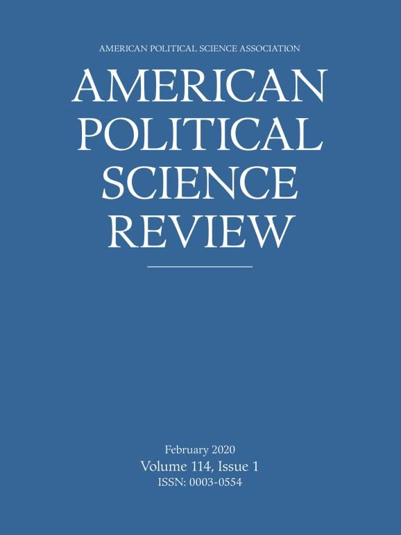
《美国政治科学评论》（American Political Science Review, APSR）创刊于1906年并由剑桥大学出版社出版，是政治学领域最具权威性和影响力的期刊之一。内容广泛涵盖了政治学理论、美国政治、公共政策、公共管理、比较政治、国际关系等。根据Journal Citation Reports，其2018年的影响因子为3.895，在176种政治科学类期刊中位列第7位（7/176）
经济发展、流动性与政治不满：在巴基斯坦对托克维尔命题的实验检验
Economic Development, Mobility, and Political Discontent: An Experimental Test of Tocqueville’s Thesis in Pakistan
译者注
在因果推断和识别因果机制方面具有显著优势的实验方法，在近期的政治学和国际关系研究中得到了越来越多的关注和应用。尽管本文在理论和实验设计上有诸多地方值得商榷，但却可以为我们了解实验方法提供很大帮助，感兴趣的读者还可参考本文第三作者在巴基斯坦等地开展的一系列实验研究。
文章导读
托克维尔于1856年在其著作《旧制度与大革命》中提出了著名的“托克维尔命题”(Tocqueville’s Thesis)。该命题指出了一个反常的现象即 与经济停滞相比，社会经济发展和流动性的增强反而有可能导致政治不满。 这是因为 当经济发展时，许多市民感知到提高生活标准的潜力，但是他们的欲望 ( aspiration) 的增速可能比事实上生活水平的增速更快，因此社会流动性增加带来的扩展的机会反而会导致对政府的不满而不是对政府的信心增加。 本文将托克维尔命题形式模型化并通过在巴基斯坦的面对面调查实验验证了该命题的预测，揭示了 在何种条件下扩展的经济机会可能会引发政治不满。
一、 托克维尔命题与形式模型 ****
直觉上，经济增长减少了贫困，应该会使民众对政府的信心增加。 经典的经济投票理论也认为市民会奖励（惩罚）任期内经济发展比较好（差）的执政者。 但矛盾的是，经济发展在某些时候也可能会导致对政府的不满，托克维尔在深入研究法国大革命的历史后，最早在其著作《旧制度与大革命》里揭示了这一反常情况。 他发现，在法国成为法国大革命中心的地方恰恰是大革命前经济发展最显著的地方。与之相反，经济非常落后的俄国却没有爆发革命。但与对法国政治不稳定性的解释不同的是，包括托克维尔在内的早期政治和社会学家如李普塞特、巴林顿摩尔、布劳(Blau)等人的研究却认为美国民主制度的巩固和稳定是经济机会和社会流动性增强的结果。美法的这一差异 可能在于，美国的社会流动性和政治稳定的同时增强可能是由于经济情况和人们的期望基本一致，而法国的情况与之相反。 结合既有文献Ray(2006)，作者指出了托克维尔的命题的逻辑在于：当经济增长时，人们由于感知到社会流动性的增强而迅猛增加的欲望与其目前较差的现状形成了巨大反差，这种欲望差(aspiration gap)就会导致对政府的不满。同时，社会流动性和相对贫困感的增加带来的负面影响可能会随着人们起初的欲望水平的差异而不同。为了更精确的刻画这一逻辑，本文建立了一个非常简洁的形式模型加以说明。模型首先定义了个体i对政府的信心 Ci 是它的现在的收入 y i 和它期望的收入 g i 的差距的函数，假定 g i 一定不小于 y i ，同时为了简便和参考文献通常做法，将对政府的信心设定为欲望差的二次函数的形式即
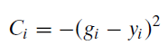
同时假定收入是在基准收入y0的基础上随着社会流动性m而变化的函数。根据托克维尔命题，m不小于0，同时也允许一个非系统的均值为0的收入冲击（idiosyncratic income shock）ui，更大的流动性和机会意味着收入提高和人们在收入分布中的位置更可能发生变化。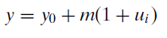 给出了y的计算公式。而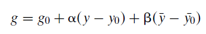 给出了个体目标收入的计算公式。即个体目标是由基准目标g0，个人的收入与基准的差值、其他人的平均收入与个体目标的差值决定，两个在(0,1)区间的参数α和β的调节表明目标具有粘性，即目标的调整并不会与收入亦步亦趋。因此，简单推导，我们可以得到如下三个命题：
一，个体非系统收入 u i 的增加会增加个体对政府的信心。 二，当且仅当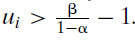 时，对政府的信心随着社会流动性的增加而增加 三，在高流动性的社会，起初欲望差更大的个体在经历收入减少时对政府的信心的减少量更大。
把y和y0代入g，再分别对ui和m求一阶偏导，整理之后一阶条件即可证明命题一、二成立。命题三则通过如下所示，求C关于m和u的函数的混合偏导，文中给出的一种证明思路是如下图所示整理之后可以发现这一混合偏导在欲望差上严格递增进而得证。
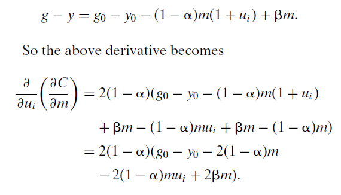
但为便于读者理解，译者简单地绘出了给定参数α取0.6、β取0.5，欲望差取不同值时的二元函数投影的比较静态结果图。如下图所示，深蓝至深红表示对政府的信心由小变大，可以明显的看到当欲望差比较大的时候，左图对政府的信心明显小于右图。
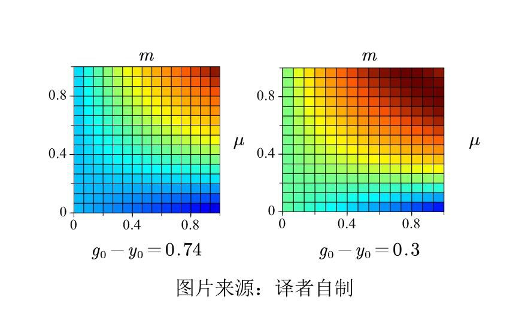
二、 实验设计
为了检验形式模型给出的上述三个命题，本文作者于2012年3-4月和2013年的4-5月在巴基斯坦三个省76个乡村2090户家庭开展了两轮原创性的调查实验。第一轮搜集了教育水平、年龄、收入等人口统计学和个体欲望、态度和认知过程相关的变量。第二轮则具体开展实验，一年间隔好处在于排除了实验处理影响调节变量和其他人口统计学变量的可能性。具体的实验中，作者运用了一个2 (poverty prime, no poverty prime) X 2 (mobility prime, no mobility prime)的启动(prime)实验外生操控个体对他们相对贫困水平和向上流动性的感知。然后 观测这两个启动是如何单独地以及联合起来影响个体对政府的信心，以及这种影响如何随着个体起初欲望差的不同而不同的。 作者对相对贫困水平的认知的操控比较精妙，由于作者已经在第一轮实验中知道了整体的收入分布情况，为便于读者理解，先设想真实的分布如下图所示，作者根据真实分布正常分割，给出虚直线所示几个收入区间，询问控制组的收入在哪个区间内。但给处理组展示的区间是类似如图实直线的分布所示，也询问处理组的收入在哪个区间内。这样，处理组绝大部分人的收入都会落在数值最小的区间内，这就使处理组的个体“感知”到了自己相对贫困水平。
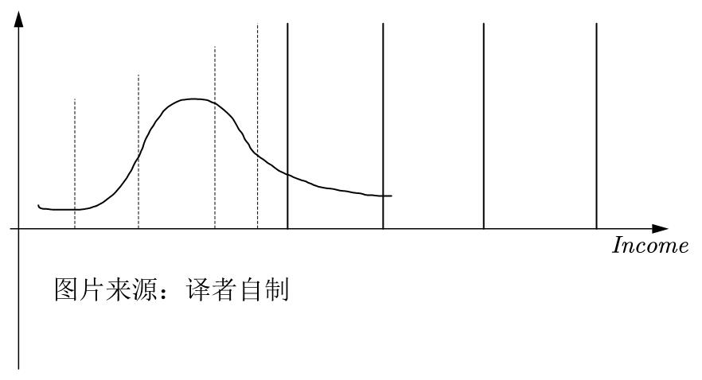
为了外生操控个体感知的流动性，根据文献的做法，在询问个体的政治态度之前，被试中一半的人被告知“ OECD2012 年的对22个国家的研究显示巴基斯坦的社会流动性更强，个人和家庭提升自己的经济和社会地位的可能性超过了美国、英国、意大利和中国还有其他的国家。”这样就完成了两个启动。第一轮调查中，对个体欲望的测度也是根据心理学和经济学文献，个体回答收入、财产、教育、社会四个维度的重要性权重、希望达成的水平和目前达成的水平，考虑到个体的欲望差受到他所在社区的影响，如下式所示，对欲望的测度则将个体欲望差减去整个社区的欲望差的均值除以社区欲望差的标准差再根据个体给予的权重加权平均得到。对因变量政府信心的测度比较常规，分别询问个体对政府整体服务社区服务、安全服务的满意度、对政府的信心和对现行政治体制的支持这五个问题（变量具体的描述性统计具体可参考原文）
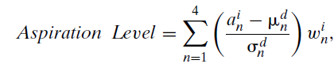
随后，作者使用了两个带有启动效应及其交互项的最小二乘回归（OLS）对上述三个命题进行了验证，结果如下图所示，这证明了三个命题的准确，随后的一系列稳健性检验和启动操控检验也保证了结果的可靠。
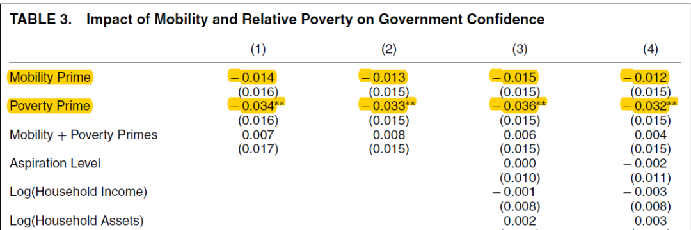
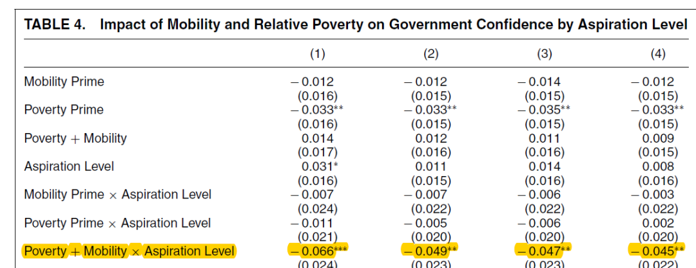
三、 结 论 ****
本文通过形式模型和实验验证了托克维尔命题，对有关对政府支持的来源的文献做出了重要的理论和经验贡献。托克维尔命题和本文的研究帮助我们理解在经济快速发展和流动性增强的社会，感受到更强烈的相对剥夺感的群体会更有可能反对政府，以及帮助执政者避免国家失败，设计响应民众诉求的公共政策。
_ ** _ ** _ ** _ 本文由国政学人独家编译推荐，文章观点不代表本平台观点，转载请联系授权。**__ 扫下方二维码查看往期精彩
【政策评论】信誉之后：川普时代的美国外交政策丨国政学人 第301期
【霸权研究】大国竞争战略中的经济遏制丨国政学人
第302期
【新刊速递】第12期 | International Affairs, Vol.95, No.6，2019
【新刊速递】第13期|Chinese Journal of International Politics, No.4, 2019
【新刊速递】第14期|Chinese Journal of International Politics, No.3, 2019
【新刊速递】第15期 | International Organization, No.4, 2019
分类导览 1
分类导览 2

点“在看”给我一朵小黄花